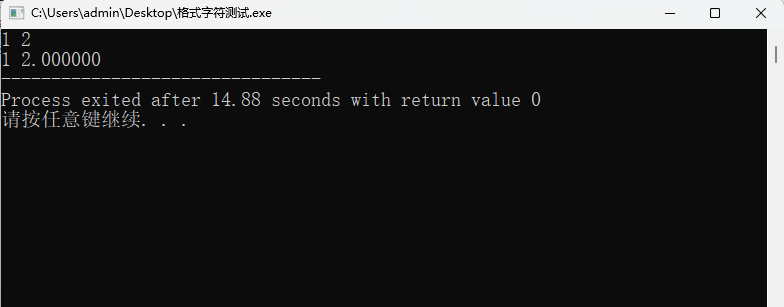

C语言中的输入与输出
在第二节我们曾经介绍“#include<stdio.h>”的含义是包含一个标准输入输出的头文件，随即在第三节我们又学习了printf语句。printf是一个最为常见的输出语句，那么除此之外，C语言中还有那些输入输出语句呢？
C语言中有三对输入输出语句，由于格式相似，我们分三对介绍。
最常用的输入输出语句：scanf()与printf()
作为相对应的输入输出字符，scanf与printf在形式上都是由一个英文单词加上format的缩写f构成，其使用起来也遵循类似的规则，使用起来都需要在括号内加入双引号来限定内容，将双引号内的内容原样输入或输出。正如\n这类转义字符具有特殊作用一样，在scanf和printf中还存在着一个特殊的，具有特殊作用而不被原样输出输出的符号，称之为格式字符。
scanf与printf语句中的格式字符
在scanf和printf中，形如%d这类%加字母的就被称之为格式字符。
格式字符，顾名思义，是来限定输出内容格式的，为了便于学习，我们在此只陈列一些最为常用的格式字符：
| 格式字符 | 格式说明 |
|---|---|
| %d | 带符号的十进制整数 |
| %u | 无符号的十进制整数 |
| %c | 一个字符 |
| %s | 一个字符串 |
| %f | 浮点数，即小数 |
当我们对输入输出的格式进行限定后， 此时我们会发现少了些什么：我们明确了输出输出的格式，却没有明确我们要格式化的对象，接下来我们就将要学习如何在输入输出语句中确定格式化的对象。
用逗号间隔开来的补充说明：变量的首次运用
类似于英语中的同位语，我们可以在括号内、引号后的位置使用逗号，从而确定我们要输入输出的对象。这个对象，可以是变量，也可以是含有变量的表达式。下面我们看一个例子来学习：
#include<stdio.h>
int main()
{
int example_1;
float example_2;
scanf(“%d %f”, &example_1, &example_2);
printf(“%d %f”, example_1, example_2);
return 0;
}

通过这个例子，我们可以总结出3点规律：
1.引号内内容应当原样输入输出，包括空格和其他字符；
2.引用变量时的格式字符应该与声明时的对应，不一致的格式可能会造成数据丢失或者报错；
3.输入语句scanf中引用变量时要用上&，&的名称是取地址符，整个scanf语句的意思就是将输入的值赋给变量所分配的地址，关于地址的更多详情，我们会在指针一节中提及，这里我们可以看做将输入的值赋给&后的变量；
对格式字符的附加修饰
在实际运用中，我们可能还要对格式进行进一步要求，这里就引入了对格式字符的附加修饰字符，由于输出输出语句中修饰字符存在细微差别，我们这里分别介绍。
在输入语句中我们以整型%d为例，*%d表示数据在输入后不进行赋值，%nd表示将输入数据的前n位赋值，%hd表示输入短整型，%ld表示输入长整型。
在输出语句中我们以浮点型%f为例，%lf表示输出双精度double型，%mf表示输出数据最小宽度为m格，%mf表示输出数据最小宽度为m格且少的位置用0补齐，%.nf表示输出数据小数点后有n位，%-f表示输出数据想左靠。
适用于字符的输入输出语句：getchar()与putchar()
对于字符型乃至接下来所说的字符串型，它们也同样遵循上文我们所总结出来的第二条规律，即格式的相统一。
而不同它们和第一类相比，也有着许多不同之处，这里我们以输入输出的顺序依次介绍。
关于getchar()
作为简单的输入语句，getchar()在使用时有一下几点需要注意：
1.getchar()会接收键盘输入的第一个字符，无论它是符号、数字、字母甚至是空格；
2.getchar()的赋值可以直接用等号，例如：变量名 = getchar；
关于putchar()
作为简单的输出语句，putchar()在使用时有一下几点需要注意：
1.在对字符字符进行原样输出是括号内用的是单引号而非双引号；
2.括号内引号中可以是转义字符，例如’\101’就会输出A；
3.可以直接在括号内输入变量名来输出它所对应的字符；
适用于字符串的输入输出语句：gets()与puts()
字符串的输入输出可能会涉及指针等后续内容，本节内容我们将在指针后介绍。
结语
作为最常用的输入输出语句scanf与printf，学好它们以及配套的格式字符、修饰字符便足以应对大多数环境。
- 本文标题：C语言教程_05：输入与输出
- 本文作者：云湍/Cloudstill
- 创建时间：2022-10-20 08:22:48
- 本文链接：https://gitee.com/cloudstill/cloudstill.git/2022/10/20/C语言教程-05：输入与输出/
- 版权声明：本博客所有文章除特别声明外，均采用 BY-NC-SA 许可协议。转载请注明出处！